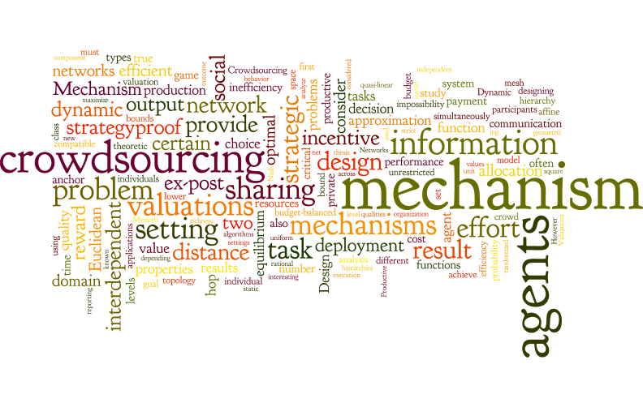

"If you believe too much you'll never notice the flaws; if you doubt too much you won't get started. It requires a lovely balance."
-- Richard W. Hamming
News

Site built with Simple Responsive Template


I am a Fulbright-Nehru post-doctoral fellow at the Computer Science Department, Carnegie Mellon University, hosted by Ariel Procaccia. Earlier, I was a lecturer and post-doctoral fellow at the Economics and Planning Unit, Indian Statistical Institute, Delhi Centre, where I worked in the microeconomics group with Arunava Sen, Debasis Mishra, and Souvik Roy. Even earlier, I completed my PhD from the Department of Computer Science and Automation, Indian Institute of Science, Bangalore, advised by Y. Narahari. My research interest lies in the intersection of Economics and Computation, and are applied in the areas like Internet economics, crowdsourcing, resource allocation, online advertising, auctions, matching, social networks. For more details on my research, please see the publications page.
Full CV [PDF]
Email: swaprava AT gmail DOT com, swapravn AT cs DOT cmu DOT edu
"If you believe too much you'll never notice the flaws; if you doubt too much you won't get started. It requires a lovely balance."
-- Richard W. Hamming
